정답 없이,
비슷한 것끼리 묶기 — 군집화
이 자료는 군집화 교안 한 권을 끝까지 담았습니다
"정답(y) 없이 x만 있을 때, 비슷한 데이터끼리 어떻게 묶을까?"
거리 기반. K를 정하고, 중심(평균)으로 묶고, K를 고르는 법(엘보·실루엣)
거리 기반. K 없이 덴드로그램을 만들고, 어디서 끊느냐로 군집 수
밀도 기반. 핵심점·경계점·잡음, 밀도 도달·연결, 그리고 응용·비교
7주차 1차시는 교안 25쪽(DBSCAN 소개)까지, 26–35쪽은 7주차 2차시 앞부분에 이어서 했습니다. 군집화를 한곳에서 보도록 이 자료에 모두 모았습니다(결정 트리는 7주차 2차시 자료).
왜 배우고, 어디에 힘을 줄까
6주차까지(회귀·로지스틱·SVM)는 정답 y가 있어야 학습할 수 있었습니다. 실제 데이터는 정답이 없는 경우가 훨씬 많습니다(고객 기록, 사진 픽셀). 군집화는 정답 없이 비슷한 것끼리 묶어서 데이터의 구조를 보여 주는 방법이고, 4주차에 이름만 본 비지도 학습을 처음 실제로 해 보는 수업입니다.
| 구분 | 교안 쪽 | 섹션 | 무엇을 할 수 있으면 되나 |
|---|---|---|---|
| 배움 | 1–23 | 01–14 | 비지도 학습, K-평균 전체(정의·알고리즘·한계·K 고르기), 계층적 군집화 |
| 보고 넘어가기 | 24 | 15 | 연결 방식 — 외울 것 없음(교수님) |
| 배움 | 25–32 | 16–20 | DBSCAN — Density·Noise(교수님). 핵심점·경계점·잡음, 밀도 도달·연결 |
| 보고 넘어가기 (추측) | 33–35 | 21–23 | GMM, 이미지 분할, 방법 비교 — 그림이 무엇을 보여 주는지 |
26–35쪽은 교수님 말씀을 따로 받지 못해, 구분은 교안 분량을 보고 제가 추측한 것입니다.
비지도 학습과 K-평균
지금까지 배운 모델은 모두 정답이 있었다
| 과제 Task | 입력 Input | 정답 Target | 모델 |
|---|---|---|---|
| 자동차 가격 예측 | 연식, 주행거리, 브랜드 | 가격 (숫자) | 선형 회귀 |
| 전력 사용량 예측 | 날씨, 시간, 과거 사용량 | 다음 1시간 사용량 | 선형 회귀 |
| 고객 이탈 예측 | 이용량, 요금, 불만 접수 | 이탈 / 유지 | 로지스틱 회귀, SVM |
| 고장 진단 | 진동, 온도, 전류 | 정상 / 고장 종류 | 다중 클래스 SVM |
| 행동 인식 | 가속도·자이로 센서 특징 | 걷기 / 앉기 등 | 다중 클래스 SVM |
정답이 숫자면 회귀, 클래스면 분류였습니다. 모든 행에 Target 열(정답)이 있다는 점이 지도 학습supervised learning의 공통점입니다.
비지도 학습 Unsupervised Learning
라벨이 없는 데이터에서 패턴과 구조를 배우는 방법입니다.
- 정답 라벨이 주어지지 않습니다 No ground truth labels
- 모델이 숨겨진 구조나 관계를 스스로 찾아냅니다
앞 장의 표로 말하면 Target 열이 통째로 없는 상황입니다. 입력만 보고 "어떤 데이터끼리 비슷한가"를 찾아야 하고, 대표 방법이 오늘의 군집화입니다.
지도 학습에서는 정답 y가 있었는데, 비지도 학습에서는 x(입력)만 있고 y는 없습니다.
용어는 "레이블" 대신 "라벨"로 씁니다.
군집화 Clustering란
군집화는 데이터 안에서 부분 집단, 즉 군집cluster을 찾는 여러 기법을 통틀어 부르는 말입니다.
목표: 데이터를 서로 겹치지 않는 몇 개의 집단으로 나누되(분할partition), 같은 집단 안의 관측치끼리는 서로 매우 비슷하게.
두 관측치가 비슷하다/다르다는 뜻을 먼저 정의해야 하고, 이것은 보통 분야(도메인) 지식으로 정합니다. 예: 고객을 "구매 금액"으로 묶을지 "구매 시간대"로 묶을지는 무엇을 하려는지에 따라 정해집니다. 계산에서는 "비슷함"을 보통 거리로 나타냅니다(07).
데이터의 패턴pattern과 구조structure를 보고 부분 집단으로 나누는 것이 군집화입니다.
군집화 방법 세 가지 Clustering Methods
| 방법 | 군집 수를 미리? | 핵심 아이디어 | 섹션 |
|---|---|---|---|
| K-평균K-means | 예 — K개 | 관측치를 미리 정한 K개 군집으로 나눈다 | 04–12 |
| 계층적 군집화Hierarchical | 아니오 | 나무 그림(덴드로그램)을 만들고, 그림 하나로 군집 수 1개부터 n개까지의 결과를 한꺼번에 본다 | 13–15 |
| DBSCAN | 아니오 | 점이 빽빽한 영역을 군집으로 보고, 밀도가 낮은 영역으로 군집을 구분한다 | 16–20 |
DBSCAN의 D는 density(밀도)입니다. 위 두 방법(K-평균, 계층적)은 거리 기반, DBSCAN은 밀도 기반입니다.
| 기준 | 무엇을 보고 묶나 |
|---|---|
| 거리 기반 | 점과 점(또는 중심) 사이 거리가 가까운가 |
| 밀도 기반 | 주변에 점이 빽빽하게 모여 있는가 |
K-평균 K-Means Clustering
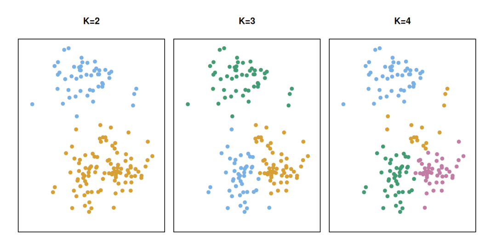
2차원 관측치 150개에 K-평균을 K = 2, 3, 4로 적용한 결과입니다. 점의 색 = 알고리즘이 배정한 군집. 군집에는 순서가 없으므로 색은 임의이고, 이 색은 학습에 쓴 정답이 아니라 군집화의 결과물입니다.
K-평균으로 클러스터링을 하려면 K(클러스터 개수)를 정해 줘야 합니다.
- 세 그림은 모두 같은 데이터입니다. 바뀐 것은 정해 준 클러스터 개수뿐입니다.
- K = 2일 때의 cluster 1, 2와 K = 3일 때의 cluster 1, 2, 3은 같은 클러스터가 아닙니다. 번호가 같다고 같은 집단으로 해석하면 안 되니 해석할 때 주의.
그림 읽기: K = 2면 위·아래 두 무리, K = 3이면 아래 큰 무리가 둘로, K = 4면 더 쪼개집니다. 같은 데이터도 K에 따라 결과가 달라집니다(K 정하기는 11–12).
정의 ① — 군집을 집합으로 쓰기
C₁, …, CK를 각 군집에 속한 관측치 번호(인덱스)들의 집합이라 합시다. i번째 관측치가 k번째 군집에 있으면 i ∈ Ck.
| 성질 | 식 | 뜻 |
|---|---|---|
| ① 빠짐없이 | C1 ∪ ⋯ ∪ CK = {1, …, n} | 모든 관측치는 적어도 하나에 속함 |
| ② 겹치지 않게 | Ck ∩ Ck′ = ∅ (k ≠ k′) | 두 군집 이상에 동시에 속하지 않음 |
합치면 모든 점이 정확히 한 군집에만 속한다. 1학기 이산수학 용어로 {1, …, n}의 분할입니다.
cluster 1에 30개, cluster 2에 40개, cluster 3에 30개 → 총합 100개(①).
어떤 데이터든 C₁, C₂, C₃ 중 하나에는 무조건 들어가야 합니다. 하지만 "C₁일 수도 있고 C₂일 수도 있다"는 불가능(②).
보충 예: 5개, K = 2에서 C₁ = {1, 2, 5}, C₂ = {3, 4}면 ①② 모두 ✓. C₁ = {1, 2}, C₂ = {2, 3, 4, 5}는 2번이 겹쳐 ② 위반.
정의 ② — 군집 내 변동을 최소로
좋은 군집화 = 군집 내 변동within-cluster variation, WCV이 가능한 한 작은 것. WCV(Ck)는 같은 군집 안 관측치들이 서로 얼마나 다른지입니다.
minC1, …, CK { ∑k=1K WCV(Ck) }
점들을 K개로 나누는 모든 방법 중, 군집마다의 변동을 다 더한 값이 가장 작은 나누기를 고릅니다.
K가 3이면 WCV(C₁) + WCV(C₂) + WCV(C₃)를 줄여 가야 합니다.
WCV를 구체적으로 — 거리의 제곱으로
WCV(Ck) = 1|Ck| ∑i, i′∈Ck ∑j=1p (xij − xi′j)2
- (xij − xi′j)2: 관측치 i와 i′의 j번째 특징 차이의 제곱
- ∑j: p개 특징 전부 → 두 점 사이 유클리드 거리의 제곱
- ∑i, i′: 군집 안의 모든 점 쌍에 대해 / 1/|Ck|: 군집 크기로 나눔
중심(평균) x̄k를 쓰면 WCV(Ck) = 2∑i∑j(xij − x̄kj)². 예: {1, 3} → 순서쌍 거리² 4 + 4 = 8, ÷2 = 4. 중심 2까지 거리² 합 1 + 1 = 2, ×2 = 4.
그래서 "점끼리 가까운 군집" = "점들이 중심에 가까운 군집". 다음 알고리즘이 중심(평균)을 쓰는 이유입니다. 교안은 "Euclidean distance"라 했지만 실제로 더하는 것은 거리의 제곱입니다.
거리 척도 Distance Metrics
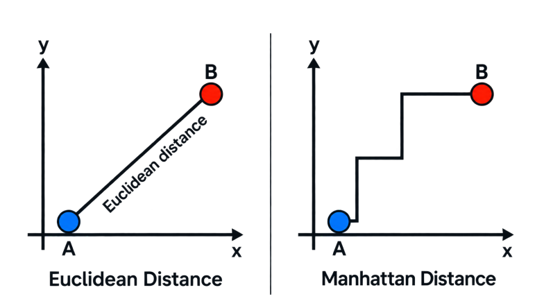
| 거리 | 식 (2차원) | 뜻 |
|---|---|---|
| 유클리드Euclidean | √((a1−b1)2 + (a2−b2)2) | 곧은 직선 길이 |
| 맨해튼Manhattan | |a1−b1| + |a2−b2| | 가로·세로로만 이동 |
예(보충): A = (1, 1), B = (4, 5) → 유클리드 √(3² + 4²) = 5, 맨해튼 3 + 4 = 7. 맨해튼은 항상 유클리드 이상.
K-평균은 기본적으로 유클리드 거리를 씁니다. 어떤 거리를 쓰느냐가 곧 02의 "비슷함의 정의"입니다.
K-평균 알고리즘
06의 문제는 나누는 방법이 너무 많아(거의 Kⁿ가지) 전부 따질 수 없습니다. 그래서 반복으로 좋은 답(국소 최적)을 찾습니다.
- 무작위 배정: 각 관측치에 1~K 번호를 무작위로
- 배정이 안 바뀔 때까지 반복:
2.1 중심 계산 — 군집마다 특징별 평균 벡터
2.2 재배정 — 각 점을 가장 가까운 중심의 군집으로(유클리드)
- 각 점을 centroid(중심)와 가까운 것끼리 나눌 수 있습니다.
- centroid를 그 군집 점들의 평균으로 옮기는데, 그래서 이름이 K-means(K-평균)입니다.
- centroid를 처음에 어떻게 잡느냐에 따라 결과가 달라집니다.
- 이를 개선한 것이 K-means++: 1번 단계(초기화)만 스마트하게, 나머지는 그대로(09).
반복할수록 원이 작고 촘촘해진다 (교안 10쪽)
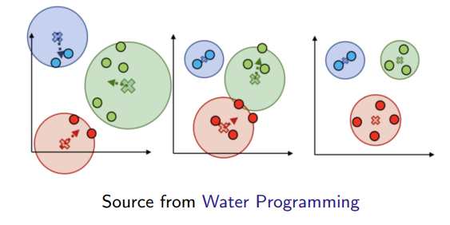
✕ = 중심. 각 점을 가장 가까운 중심으로 다시 배정하면 중심이 점선 화살표 방향(새 평균)으로 옮겨 가고, 배정이 더 이상 바뀌지 않으면 멈춥니다(오른쪽).
K = 3 네 단계 인포그래픽 (교안 11쪽)
- Initialize: 중심 K개를 먼저 고름
- Assign: 각 점을 가장 가까운 중심에
- Update: 중심을 그 군집의 평균 위치로 이동(빨간 화살표)
- Reassign: 새 중심으로 다시 배정 → 점 7이 Cluster 3으로 바뀜
"Repeat assignment and update until convergence." 이 그림은 무작위 번호 대신 중심을 먼저 고르는 방식으로 시작합니다(K-평균++도 같은 방식).
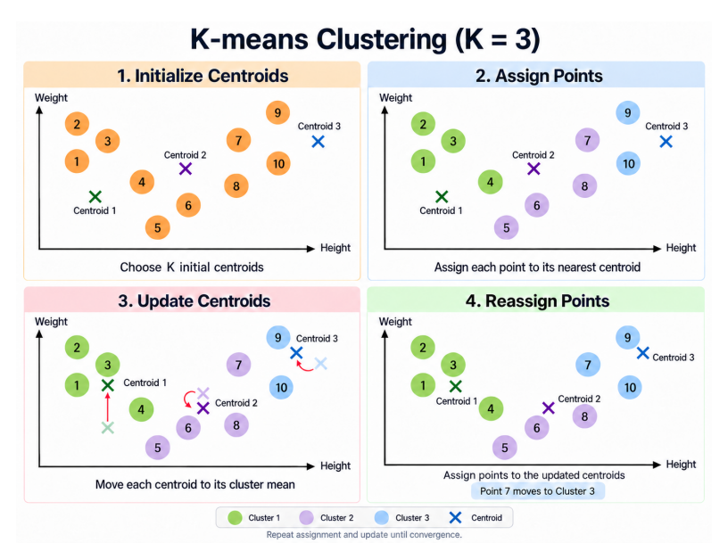
손으로 한 번 해 보기 · 왜 멈추나 보충
1차원 점 1, 2, 9, 10을 K = 2로. 처음 중심을 일부러 나쁘게 1과 2로.
- 배정: 1 → 중심 1 / 2·9·10 → 중심 2
- 평균: {1} → 1, {2, 9, 10} → 7
- 재배정: 2는 |2−1| = 1 < |2−7| = 5 → 군집 1로 → {1, 2}, {9, 10}
- 평균: 1.5, 9.5 → 다시 해도 안 바뀜 → 종료
2.1(중심을 평균으로)과 2.2(가장 가까운 중심으로)는 모두 "중심까지 거리 제곱합"을 줄이거나 그대로 둡니다. 목적함수가 절대 커지지 않으니 언젠가 멈춥니다.
다만 멈춘 곳이 전체 최선(전역 최적)이라는 보장은 없고 국소 최적일 수 있습니다. 그래서 여러 번 돌리거나 K-평균++로 시작점을 잘 고릅니다.
K-평균++ K-Means++ — 시작점만 똑똑하게
무작위 초기화의 문제: 시작점이 나쁘면 나쁜 국소 최솟값으로 수렴합니다. 예: 처음 중심 두 개가 같은 무리 안에 있으면 그 무리는 쪼개지고 다른 두 무리는 합쳐진 채 멈출 수 있습니다.
- 첫 중심은 데이터 점 중 균등하게 무작위로
- 다음 중심은 각 점을 가장 가까운 기존 중심까지 거리의 제곱에 비례하는 확률로 뽑음 → 멀리 있는 점일수록 잘 뽑힘
- K개가 될 때까지 반복, 그다음은 08과 같음
점 0, 1, 10, 11에서 첫 중심 0. 나머지의 거리²는 1, 100, 121 → 뽑힐 확률 1/222, 100/222, 121/222. 10이나 11이 뽑힐 확률이 99% 이상 → 두 중심이 서로 다른 무리에.
장점: 초기 중심이 고르게 퍼짐 · 대체로 더 빨리 수렴 · 나쁜 국소 최솟값 가능성 감소
scikit-learn의 KMeans는 기본값으로 K-평균++ 초기화를 씁니다.
K-평균은 거리 기준으로는 잘 나누지만, 문제가 몇 가지 있습니다.
K-평균은 각 점을 가장 가까운 중심에 붙이는 방식이라, 군집을 "중심 주변의 비슷한 크기의 둥근 덩어리"로 가정하는 셈입니다. 이 가정이 맞지 않으면 잘 안 됩니다. 다음 네 장이 교안의 네 가지 예입니다.
한계 ① 크기가 다른 군집을 잘 못 찾는다
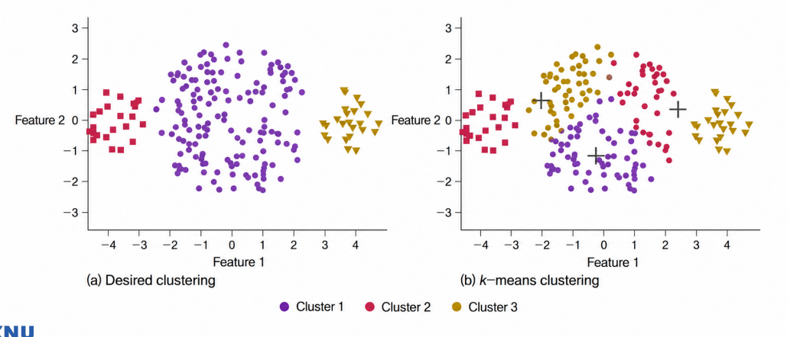
정답은 가운데 큰 무리 + 양쪽 작은 무리입니다. K-평균은 큰 무리를 쪼개고, 작은 무리를 큰 무리 조각과 합쳐 버립니다. Struggles to identify clusters of different sizes.
한계 ② 밀도가 다른 군집을 잘 못 찾는다
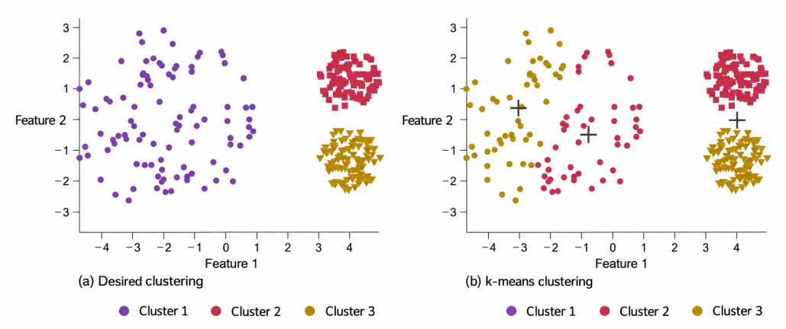
정답은 성긴 무리 하나 + 촘촘한 무리 둘. K-평균은 성긴 무리를 둘로 쪼개고, 촘촘한 두 무리를 하나로 합칩니다(중심이 두 무리 사이 빈 곳에 놓임). Struggles to identify clusters of different densities.
한계 ③ 휘어진 모양(국소 패턴)에 약하다
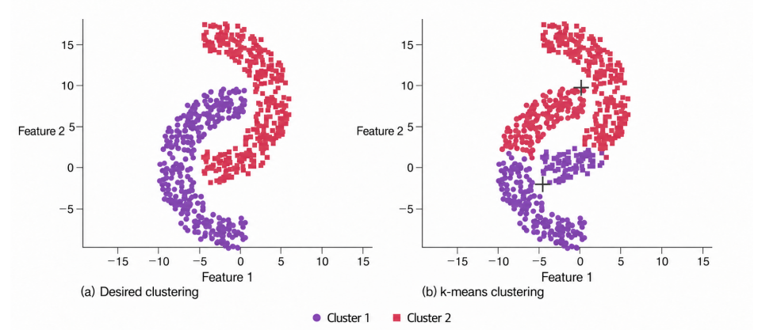
정답은 서로 맞물린 초승달 두 개. K-평균은 중심에서 가까운 쪽으로만 나누므로 거의 직선 경계로 위·아래를 자릅니다. Performs poorly when local patterns are present.
한계 ④ K를 어떻게 정할지 알기 어렵다
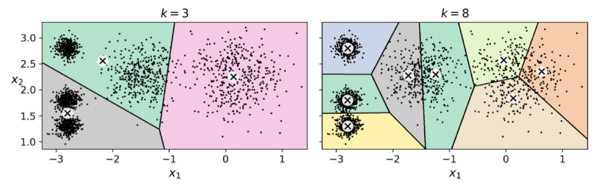
실제 덩어리는 5개(왼쪽 촘촘한 3개 + 넓은 2개). 색 영역 = 각 중심(⊗)에 배정되는 구역. k = 3이면 서로 다른 덩어리가 합쳐지고, k = 8이면 한 덩어리가 쪼개집니다.
왜 이런 일이: 목적함수가 "중심까지 거리 제곱합"이라 큰 무리를 쪼개면 합이 크게 줄고, 경계가 항상 두 중심의 수직이등분선(직선)이라 휘어진 모양은 못 나눕니다. ②③은 DBSCAN(16–20)이 잘 풀고, ④는 다음 두 섹션이 다룹니다.
최적의 K 찾기 ① — 이너셔 inertia와 엘보 elbow
이너셔 = 모든 군집의 WCV 합 = 각 점에서 자기 군집 중심까지 거리 제곱의 총합
Inertia = ∑k ∑i∈Ck ∑j (xij − x̄kj)2
이너셔 값 자체로는 K를 못 고릅니다. K를 늘리면 항상 계속 작아지기 때문입니다(K = n이면 0).
그래서 급하게 줄다가 갑자기 완만해지는 꺾이는 점(팔꿈치)을 찾습니다. 그림에서는 k = 4. 실제 덩어리는 5개였으니 엘보는 대략적인 방법입니다.
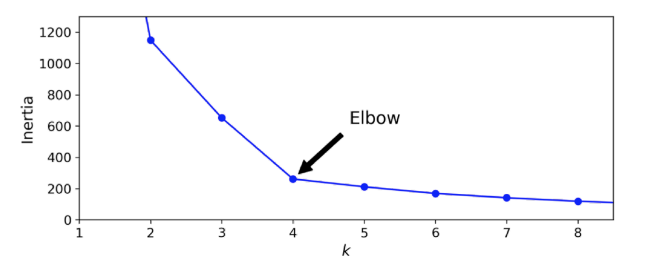
교안 8쪽 WCV 정의(점 쌍 합 ÷ |Ck|)를 그대로 쓰면 이너셔 식의 두 번째 등호는 정확히 2배 차이(06 보충). 최소화하는 분할은 같습니다.
최적의 K 찾기 ② — 실루엣 점수 silhouette score
더 정확한 방법. 실루엣 점수 = 모든 샘플의 실루엣 계수의 평균.
s = b − amax(a, b)
| a | 같은 군집의 다른 점들까지 평균 거리 |
| b | 가장 가까운 다른 군집의 점들까지 평균 거리 |
| s ≈ +1 | 자기 군집 깊숙이, 다른 군집과 멂 (a ≪ b) |
| s ≈ 0 | 군집 경계 근처 (a ≈ b) |
| s ≈ −1 | 잘못 배정됐을 가능성 (a ≫ b) |
b는 커지고 a는 작아져야 합니다.
보충 예: 군집 1 = {(0,0), (0,1), (1,0)}, 군집 2 = {(5,5), (5,6), (6,5)}. 점 (0,0)의 a = 1, b ≈ 7.56 → s ≈ 0.87. (5,5)를 일부러 군집 1에 넣으면 그 점의 s ≈ −0.85 → "잘못 배정"이 숫자로 드러남.
실루엣 점수 그래프와 실루엣 다이어그램 (교안 19쪽)
위 그래프: k = 4에서 가장 높고 k = 5도 높습니다. 점수가 높은 k가 좋은 후보.
다이어그램: 칼날 하나 = 군집 하나. 높이 = 군집 크기, 가로 길이 = 각 점의 실루엣 계수, 빨간 점선 = 평균(실루엣 점수).
좋은 k에서는 모든 칼날이 점선을 넘고 두께도 고릅니다. k = 3·6은 못 미치는 칼날이 있고, k = 4·5는 모두 넘습니다. 다이어그램까지 보면 군집 크기가 고른 k = 5도 좋은 선택입니다(실제 덩어리 5개).
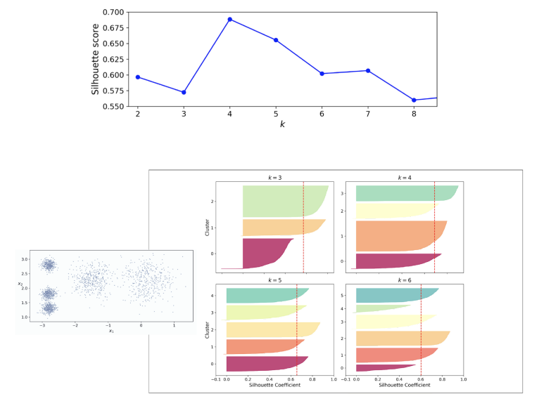
계층적 군집화 Hierarchical Clustering
K를 정하지 않는 다른 방법
K-평균은 K를 미리 정해야 하는데, 이것이 단점이 될 수 있습니다(10의 ④). 계층적 군집화는 특정 K를 정하지 않아도 됩니다.
가장 흔한 것은 상향식bottom-up = 병합형agglomerative입니다. 덴드로그램을 잎(아래)에서 시작해 줄기(위)까지 쌓아 올리기 때문입니다.
- 각 점을 혼자만의 군집으로 시작
- 가장 가까운 두 군집을 찾아 합침
- 반복 → 모든 점이 하나의 군집이 되면 끝
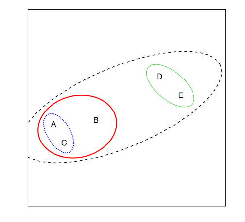
덴드로그램 dendrogram 읽기
가로축 = 잎(관측치), 세로축 = 두 군집을 합칠 때의 거리(높이).
두 가지가 낮은 곳에서 합쳐질수록 그 둘은 비슷합니다. A–C처럼 아래에서 합쳐진 쌍이 가장 비슷하고, 맨 위 검은 파선이 마지막 병합입니다.
선 색이 왼쪽 그림의 타원 색과 1:1로 대응합니다. n개 점이면 병합이 n − 1번(5개 → 4번).
"가장 가까운 두 군집"에서 군집 사이 거리를 어떻게 재는지는 15의 연결 방식이 정합니다.
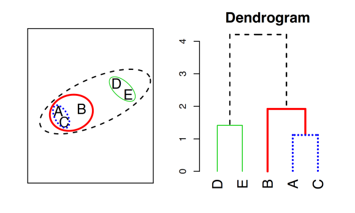
덴드로그램을 어디서 자르나
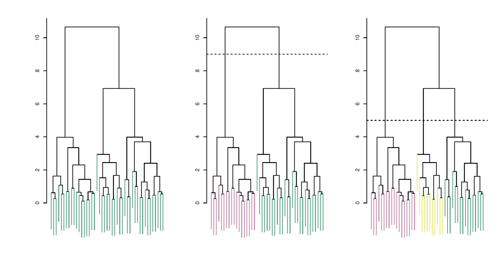
어디서 끊느냐에 따라 클러스터 개수가 바뀝니다.
점선이 세로선을 몇 개 지나는지가 군집 수입니다. 한 번 계산해 두면 자르는 높이만 바꿔 모든 군집 수의 결과를 얻습니다(03의 "1부터 n까지 한꺼번에"). 높게 자를수록 적고, 낮게 자를수록 많습니다. 세로선이 길게 뻗은 구간을 자르는 것이 자연스럽습니다.
연결 방식 Types of Linkage — 군집과 군집 사이 거리
이 쪽은 외울 것이 없고, "아 이런 방법들이 있구나" 정도로 보고 넘어가면 됩니다.
| Single 단일 | 가장 가까운 두 점 사이 거리 |
| Complete 완전 | 가장 먼 두 점 사이 거리 |
| Average 평균 | 모든 점 쌍 거리의 평균 |
| Centroid 중심 | 두 군집 중심 사이 거리 |
| Ward 워드 | 합쳤을 때 군집 내 분산이 가장 적게 늘어나는 쌍 |
항상 single ≤ average ≤ complete. 교안 "vairance"는 variance 오타.
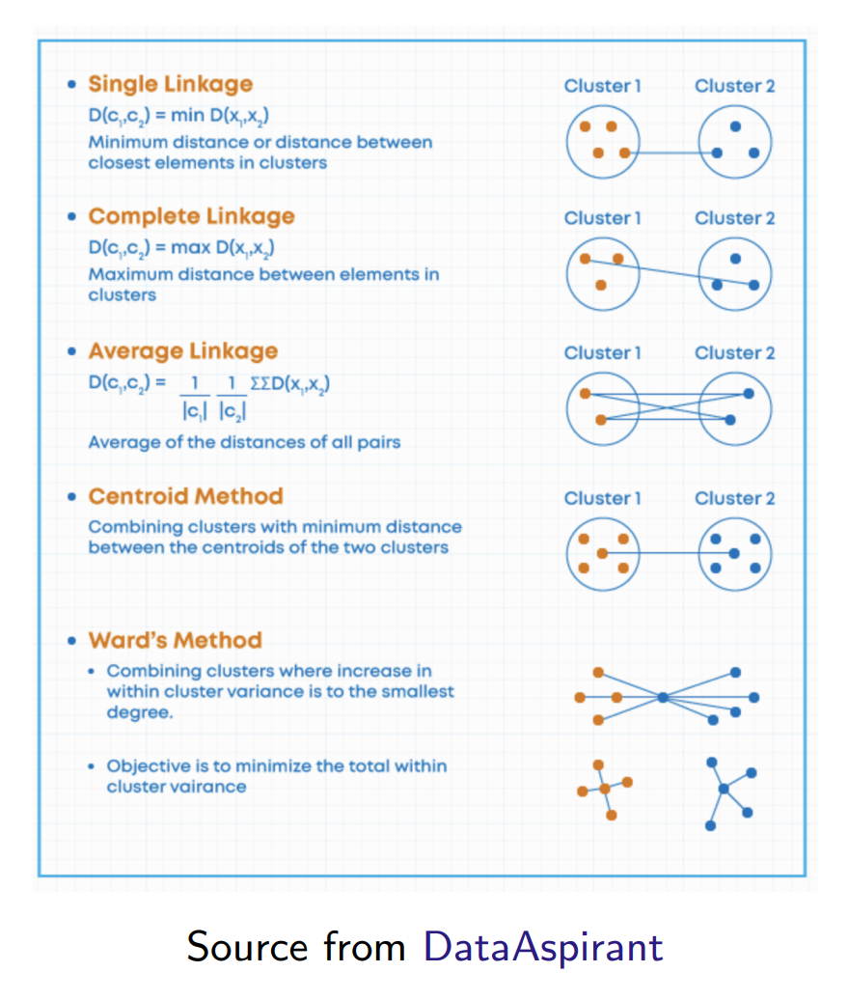
DBSCAN, 그리고 GMM·응용·비교
DBSCAN — 밀도 기반 군집화
밀도 기반 군집화는 점이 얼마나 빽빽한가를 보고 군집을 만듭니다.
- 점이 빽빽하게 모인 곳(고밀도 영역)의 점들을 하나의 군집으로
- 밀도가 낮은 곳의 점은 이상치(잡음, noise)로 표시
| K-평균 | DBSCAN | |
|---|---|---|
| 군집 수 | 미리 정함 (K) | 정할 필요 없음 |
| 모양 | 둥근 덩어리 | 임의의 모양 |
| 떨어진 점 | 반드시 어떤 군집에 | 잡음으로 뺌 |
| 정할 값 | K | eps(ε), MinPts |
Density-Based Spatial Clustering of Applications with Noise — 중요한 것은 Density(밀도)와 Noise(잡음)입니다.
K-평균은 모든 데이터가 어떤 클러스터로든 반드시 들어가야 했지만, DBSCAN은 밀도가 높은 클러스터에서 빠져나온 데이터를 억지로 넣지 않고 노이즈로 처리합니다.
정의 1 — ε-이웃 ε-neighborhood
점 p에서 거리 ε 이하인 점들의 집합 = p를 중심으로 반지름 ε인 원 안의 점들(자기 포함).
Nε(p) = { q ∈ D | dist(p, q) ≤ ε }
원 안 점 수 |Nε(p)|가 MinPts 이상이면 "p 주변은 빽빽하다". 이것이 DBSCAN의 밀도 정의 전부입니다.
"군집 안의 모든 점이 이웃을 MinPts개 이상 가져야 한다"고 하면, 군집 가장자리 점은 원의 절반쯤이 바깥이라 이웃이 훨씬 적어 군집에서 빠져 버립니다. 그래서 점을 핵심점과 경계점으로 나눕니다.
점의 세 종류 — 가장 중요
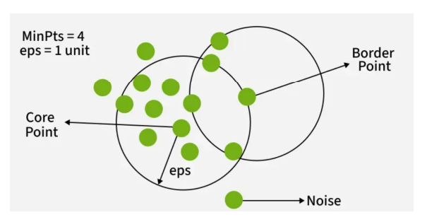
| 종류 | 판정 |
|---|---|
| 핵심점core | 내 원 안에 MinPts개 이상 → 빽빽한 영역의 안쪽 |
| 경계점border | 내 원 안은 부족하지만 어떤 핵심점의 원 안에 있음 → 군집 가장자리 |
| 잡음noise | 둘 다 아님 → 홀로 떨어진 점 |
판정 순서: ① 내 원 안 개수를 센다 → ② MinPts 이상이면 핵심점 → ③ 아니면 "나를 품은 핵심점이 있나?". 경계점과 잡음은 ③에서만 갈립니다.
교안 그림은 개념도라 경계점 원 안에도 점이 4~5개 걸쳐 보여 정의와 정확히 맞지 않습니다(확인 필요의 "주의").
정의 2 — 직접 밀도 도달 Directly Density-Reachable
q가 p로부터 직접 밀도 도달 가능 = 다음 두 조건을 모두 만족:
| 도달 | q ∈ Nε(p) | q가 p의 원 안에 있다 |
| 핵심점 조건 | |Nε(p)| ≥ MinPts | 출발점 p가 핵심점 |
그림(MinPts = 6): p의 원 안 7개 → 핵심점 → q는 p로부터 직접 밀도 도달 가능. q의 원 안은 3개뿐 → q는 핵심점이 아니라 p는 q로부터 불가능.
대칭? 둘 다 핵심점이면 대칭, 핵심점–경계점이면 비대칭(핵심점 → 경계점만).
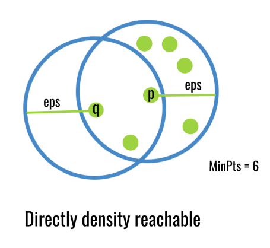
정의 3·4 — 밀도 도달과 밀도 연결
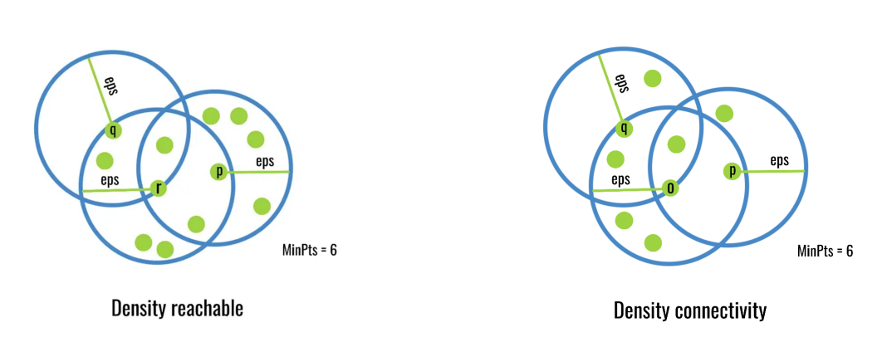
밀도 도달density-reachable: 직접 밀도 도달을 여러 번 이어 붙인 사슬이 있음. p = p1, …, pm = q, 중간 점은 모두 핵심점. 왼쪽: p(8개) → r(8개) → q. q는 4개라 핵심점이 아니므로 반대 방향은 안 됨(비대칭).
밀도 연결density-connected: p와 q가 둘 다 어떤 점 o로부터 밀도 도달 가능. 오른쪽: p(4개), q(5개)는 둘 다 핵심점이 아니라 서로 못 가지만, 핵심점 o(7개)에서 둘 다 닿음 → 연결(대칭).
"도달"이 세 개나 나오는 이유 — 한 장 비교
핵심점 하나의 원만으로는 군집이 작습니다. 그래서 핵심점에서 핵심점으로 이어 가며 군집을 넓힙니다. 이 "이어 간다"를 정확히 말하려고 단어 세 개를 만든 것입니다.
| 몇 칸 | 방향 | 한 줄 판정 | 왜 필요한가 (보충) | |
|---|---|---|---|---|
| 직접 밀도 도달 | 1칸 | 있음 | 핵심점 p의 원 안에 q가 있나? | 한 걸음 이웃 관계 |
| 밀도 도달 | 여러 칸 | 있음 | 핵심점들을 징검다리로 p에서 q까지 갈 수 있나? | 길게 휘어진 군집도 하나로 |
| 밀도 연결 | — | 없음 | p와 q 모두에 닿는 핵심점 o가 있나? | 경계점 두 개도 같은 군집으로 |
정의 5·6 — 군집과 잡음
군집: 데이터 D의 비어 있지 않은 부분집합 C로,
| ① 최대성Maximality | p ∈ C이고 q가 p로부터 밀도 도달 가능하면 q ∈ C → 닿는 점은 빠짐없이 |
| ② 연결성Connectivity | 모든 p, q ∈ C가 밀도 연결 → 한 덩어리 |
잡음: 군집 C₁, …, Ck 어디에도 속하지 않는 점들의 집합.
- 모든 점의 ε-이웃을 세어 핵심점 표시
- 아직 군집이 없는 핵심점 하나에서 시작해 밀도 도달 가능한 점을 모두 모음 = 군집 하나
- 남은 핵심점이 없을 때까지 반복
- 어디에도 못 들어간 점 = 잡음
군집 수는 저절로 정해집니다. 대신 ε·MinPts를 정해야 하고, 밀도가 많이 다른 군집이 섞이면 ε 하나로 다 잡기 어렵습니다(23 그림 3번째 줄).
가우시안 혼합 모델 Gaussian Mixture Model, GMM
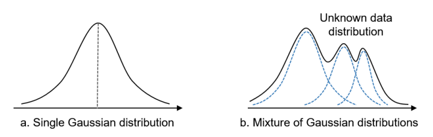
데이터 전체를 여러 개의 가우시안(정규분포)을 섞은 것으로 보고, 가우시안 하나 = 군집 하나로 해석합니다. 오른쪽: 봉우리 3개인 실제 분포(검은 실선)를 가우시안 3개(파란 점선)의 합으로 나타냅니다.
K-평균은 딱 잘라 배정하지만, GMM은 "군집 1일 확률 0.7, 군집 2일 확률 0.3"처럼 확률로 배정합니다. 가우시안마다 폭·방향이 달라도 되어 길쭉한 군집도 찾습니다.
군집화로 이미지 분할하기 Image Segmentation
원리: 픽셀 하나하나를 (R, G, B) 세 특징을 가진 점으로 봅니다. K-평균으로 묶고, 각 픽셀을 자기 군집의 중심색으로 바꾸면 K색짜리 그림이 됩니다.
그림 읽기: K가 줄수록 색이 단순해집니다. 무당벌레는 픽셀 수가 매우 적어서, K가 작아지면 빨강이 독자 군집을 얻지 못하고 주변 색에 흡수됩니다.
K-평균은 이너셔를 줄이는 쪽으로 중심을 놓아 점이 많은 색 쪽에 중심이 배치되기 때문입니다(10의 한계 ①과 같은 이유).
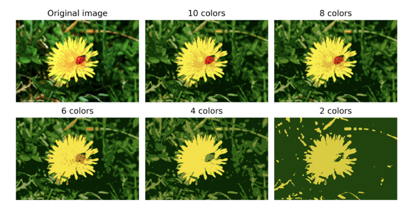
여러 군집화 방법 비교 Other Clustering Methods
| 데이터 (위→아래) | 잘 나눔 | 잘 못 나눔 |
|---|---|---|
| ① 동심원 | Spectral, Agglomerative, DBSCAN 계열 | K-평균, Ward, BIRCH, GMM |
| ② 반달 | 같음 | 같음 |
| ③ 퍼짐이 다른 3덩어리 | K-평균, GMM | DBSCAN·OPTICS (잡음 많음) |
| ④ 비스듬한 3덩어리 | GMM, Spectral, HDBSCAN | K-평균, Ward, BIRCH |
| ⑤ 일반 3덩어리 | 대부분 | — |
| ⑥ 구조 없음 | DBSCAN 계열 (하나로 둠) | K-평균, GMM (억지로 나눔) |
모든 데이터에 가장 좋은 방법은 없습니다. 검은 점 = 잡음. K-평균은 둥근 군집에, DBSCAN 계열은 휘어진 모양·잡음에 강합니다.
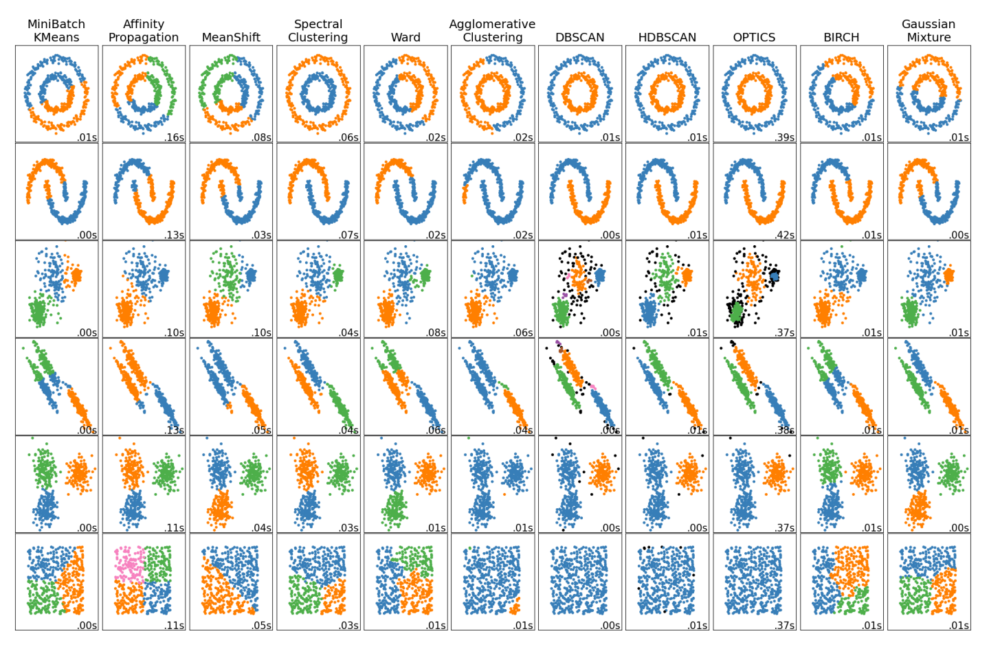
군집화 정리 — 이것만은 외우기
- 비지도 학습 = x만 있고 y(라벨) 없음 → 군집화로 비슷한 것끼리 묶음. K-평균·계층적 = 거리 기반, DBSCAN = 밀도 기반.
- K-평균: K 지정(번호는 K마다 다른 집단) → 모든 점이 정확히 한 군집 → (중심을 평균으로 ↔ 가까운 중심에 재배정) 반복, 목표는 WCV 합 최소. K-means++ = 초기화만 개선.
- K-평균 한계: 크기·밀도가 다른 군집, 휘어진 모양, K 정하기. K 고르기: 엘보(이너셔 꺾이는 점), 실루엣(b ↑ a ↓, 점수 최대).
- 계층적: K 없이 가장 가까운 두 군집을 계속 병합 → 덴드로그램. 어디서 끊느냐 = 클러스터 개수. 연결 방식은 외울 것 없음.
- DBSCAN: Density + Noise. ε 원 안 MinPts개 이상 = 핵심점, 핵심점 원 안 = 경계점, 둘 다 아님 = 잡음. 직접 밀도 도달(1칸·방향) → 밀도 도달(사슬·방향) → 밀도 연결(공통 o·대칭).
- GMM = 가우시안 여러 개의 합, 확률로 배정. 만능 군집화 방법은 없음.
용어 정리 ① — K-평균과 계층적
| 비지도 학습 | x만 있고 y(라벨)가 없는 데이터에서 패턴·구조를 찾는 학습. |
| 군집화 · 군집 | 비슷한 데이터끼리 부분 집단(군집)으로 나누는 것. |
| 분할partition | 모든 점이 정확히 한 군집에만. 합집합 = 전체, 교집합 = ∅. |
| K-평균 · 중심 | K개 군집으로, 중심(군집 점들의 특징별 평균)과 가까운 점끼리 묶는 거리 기반 방법. |
| 군집 내 변동 WCV | 같은 군집 안 점들이 서로 얼마나 다른지. K-평균은 이 합을 최소화. |
| 유클리드 · 맨해튼 | 직선 거리 √∑(차이)² / 가로·세로 이동 거리 ∑|차이|. |
| K-평균++ | 초기 중심을 기존 중심에서 멀수록 잘 뽑히게 고름. 나머지는 K-평균과 같음. |
| 이너셔 · 엘보 | 중심까지 거리 제곱의 총합 / 이너셔 감소가 갑자기 완만해지는 K. |
| 실루엣 계수 · 점수 | s = (b − a)/max(a, b), −1~+1. 점수 = 모든 점의 평균. 높을수록 좋음. |
| 계층적 · 덴드로그램 | 가장 가까운 두 군집을 계속 병합 / 병합 과정의 나무 그림, 높이 = 병합 거리. |
용어 정리 ② — DBSCAN과 그 밖
| 연결 방식linkage | 군집 사이 거리: single·complete·average·centroid·Ward (외울 것 없음). |
| DBSCAN · 노이즈 | 밀도 기반. 빽빽한 영역 = 군집, 떨어진 점 = 노이즈. K 불필요. |
| ε-이웃 · MinPts | p에서 거리 ε 이하인 점들(자기 포함) / 핵심점이 되기 위한 최소 점 수. |
| 핵심점 · 경계점 · 잡음 | 이웃 MinPts개 이상 / 부족하지만 핵심점의 이웃 안 / 둘 다 아님. |
| 직접 밀도 도달 | q가 핵심점 p의 ε-이웃 안에 있음. 1칸, 방향 있음. |
| 밀도 도달 | 핵심점들을 거치는 직접 밀도 도달의 사슬. 방향 있음. |
| 밀도 연결 | 어떤 점 o에서 p와 q 모두 밀도 도달 가능. 대칭. |
| 최대성 · 연결성 | DBSCAN 군집의 두 조건: 도달되는 점은 모두 포함 / 안의 모든 점이 밀도 연결. |
| GMM | 분포를 가우시안 여러 개의 합으로 보고 가우시안 하나 = 군집 하나. 확률로 배정. |
확인 필요 · 교안 주의
7주차 2차시 수업이 실제로 군집화 교안 26쪽(DBSCAN 정의)부터 시작했나요? 7-1 마지막 필기 "DBSCAN부터 다음주에 다시 이어갈거임"에 따라 26–35쪽(이 자료의 17–23)을 2차시 내용으로 보았습니다. 또 26–35쪽에 대한 교수님 말씀(시험 범위·심화 여부)은 받지 못했습니다.
- 8·17쪽: 8쪽 WCV는 17쪽 이너셔 식 오른쪽의 정확히 2배 — 최소화하는 군집은 같음(06, 11)
- 8쪽 "Euclidean distance" — 실제로 더하는 것은 거리의 제곱
- 24쪽 Ward's Method "vairance" → variance
- 25쪽 "Clustering of Application with Noise" → Applications
- 27쪽 그림: 경계점 원 안에도 점이 4~5개 걸쳐 MinPts = 4 기준으로는 핵심점이 됨 — 개념도라 생긴 차이(17)
예상 문제 안내
군집화 교안 전체(1–35쪽)에서 9문제를 냈습니다. 7주차 1차시 범위 6문제 + 2차시 DBSCAN 3문제입니다. 외울 것 없다고 하신 연결 방식은 뺐습니다.
문제는 예상이며 실제 출제와 다를 수 있습니다. 정답 칸을 눌러야 답이 보입니다.
- 입력 x와 정답 y가 모두 주어진다.
- 입력 x만 있고 정답 y(라벨)는 없다.
- 정답 y만 있고 입력 x는 없다.
- 로지스틱 회귀가 대표적인 비지도 학습이다.
- A 핵심점, C 경계점
- A 경계점, C 잡음
- A 잡음, C 경계점
- A 경계점, C 경계점
교안에 자주 나오는 단어 ①
| cluster /ˈklʌstər/ n. / v. | 군집, 묶다 — 서로 비슷한 데이터의 무리 K-means splits the data into three clusters. K-평균은 데이터를 세 군집으로 나눈다. |
| centroid /ˈsentrɔɪd/ n. | 중심 — 군집 점들의 평균 위치 Each point moves to the nearest centroid. 각 점은 가장 가까운 중심의 군집으로 간다. |
| partition /pɑːrˈtɪʃn/ n. / v. | 분할, 나누다 — 겹치지 않고 빠짐없이 나눔 We partition the data into K groups. 데이터를 K개 집단으로 분할한다. |
| unlabeled /ʌnˈleɪbld/ adj. | 라벨이 없는 — 정답 y가 붙어 있지 않은 Clustering works on unlabeled data. 군집화는 라벨이 없는 데이터에 쓴다. |
| inertia /ɪˈnɜːrʃə/ n. | 이너셔 — 각 점에서 자기 중심까지 거리 제곱의 총합 The inertia keeps getting lower as k increases. k가 커질수록 이너셔는 계속 작아진다. |
| silhouette /ˌsɪluˈet/ n. | 실루엣 — 군집이 얼마나 잘 나뉘었는지 재는 점수 A silhouette score near 1 is good. 실루엣 점수가 1에 가까우면 좋다. |
교안에 자주 나오는 단어 ②
| dendrogram /ˈdendrəɡræm/ n. | 덴드로그램 — 군집이 합쳐지는 과정을 그린 나무 그림 Cut the dendrogram to get the clusters. 덴드로그램을 잘라 군집을 얻는다. |
| density /ˈdensəti/ n. | 밀도 — 일정 영역 안에 점이 얼마나 빽빽한지 DBSCAN finds clusters by density. DBSCAN은 밀도로 군집을 찾는다. |
| reachable /ˈriːtʃəbl/ adj. | 도달 가능한 — 이어서 갈 수 있는 q is density-reachable from p. q는 p로부터 밀도 도달 가능하다. |
| symmetric /sɪˈmetrɪk/ adj. | 대칭인 — 방향을 바꿔도 똑같이 성립하는 Density-connectivity is a symmetric relation. 밀도 연결은 대칭 관계이다. |
| mixture /ˈmɪkstʃər/ n. | 혼합 — 여러 가지를 섞은 것 A Gaussian mixture model uses several Gaussians. 가우시안 혼합 모델은 가우시안 여러 개를 쓴다. |
필기 원문 ① — 7주차 1차시, 보내주신 그대로
필기 원문 ② — 7주차 1·2차시와 오늘
| 7-1 · 03 16:12 | 23페이지 어디서 끊냐에 따라서 클러스터 개수가 바뀜 24페이지 외울거 없고 아 이런게 있구나 정도로 보고 넘어가면 됨 25페이지 Density-Based Spatial Clustering of Applications with Noise 여기서 중요한건 Density, noise가 중요 k-means는 어떤 클러스터로든 들어가야했지만 DBSCAN은 밀도가 높은 클러스터에서 빠져나온 데이터를 굳이 클러스터에 억지로 넣지 않음(노이즈 처리) 까지 수업 끝 DBSCAN부터 다음주에 다시 이어갈거임 |
| 7-2 · 03 15:15 | 군집화 26페이지부터 있는 이미지 다 가져왔어 |
| 10.22 02:02 | 7-1 해줘(new에서는 clustering을 7-1에 다 넣고 decision tree를 7-2에 다 넣자) |